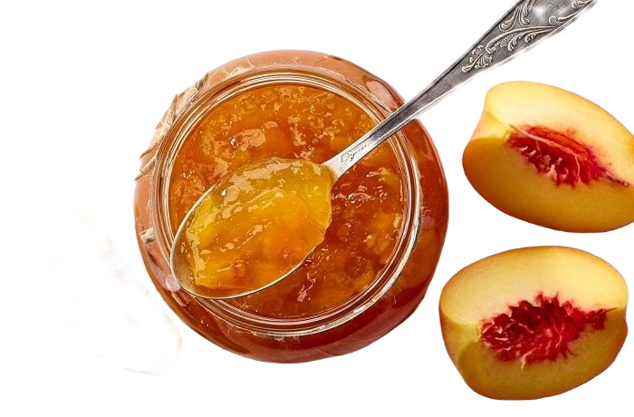

Dulces
Bienvenidos
Este emprendimiento comenzó en el año 2016 con la elaboración de dulces regionales, teniendo puntos de ventas en dietéticas y distribuidoras, a nivel nacional. En el año 2021 se incorpora una vinoteca, con distintos vinos de autor y bodegas de la Provincia de San Juan